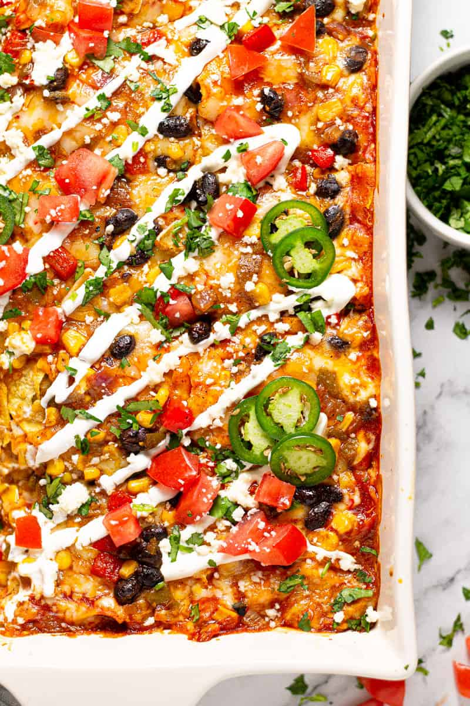

Vegan enchilada bake
Casserole-style vegan enchiladas

Ingredients
- 1 cup crushed tomatoes
- 2 cups cooked white rice
- 1 can refried beans
- 1/2 can diced tomatoes and green chiles
- 8 ounches sliced seitan
- 1/2 package shredded mozzarella style vegan cheese
- 9 corn tortillas
- 1 can green enchilada sauce
Steps
- Preheat the oven to 175°C.
- Pour crushed tomatoes into the bottom of a casserole dish.
Layer 1/3 of the rice, 1/3 of the beans, 1/3 of the diced tomatoes, 1/3 of the seitan, 1/3 of the vegan cheese,
1/3 of the tortillas and 1/3 of the enchilada sauce into that dish. Repeat for 2 more layers.
- Bake in the preheated oven until vegan cheese melts and the casserole is heated through, about 45 minutes.